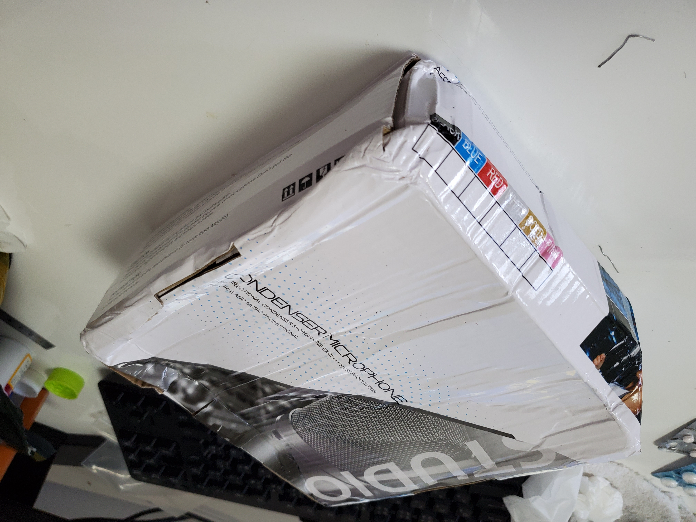
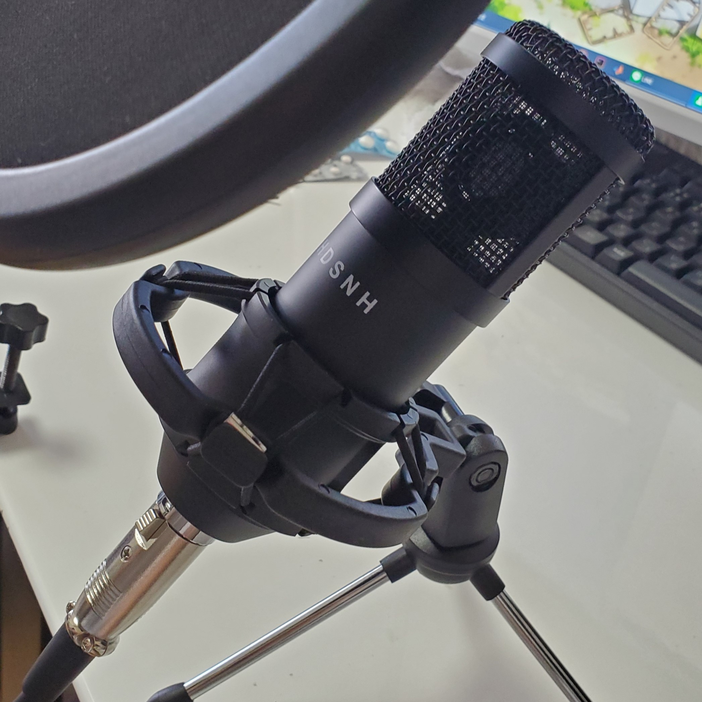
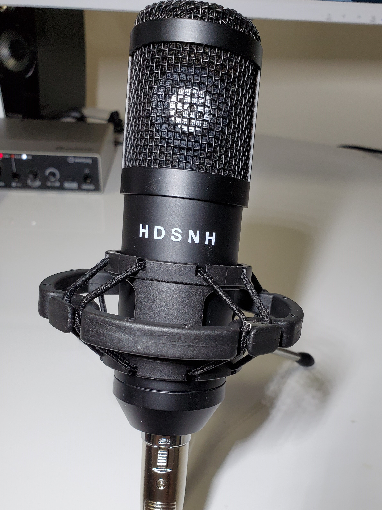
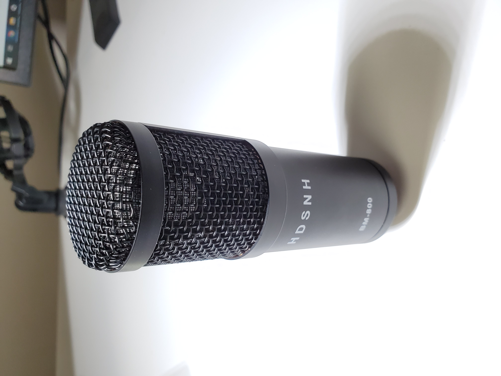
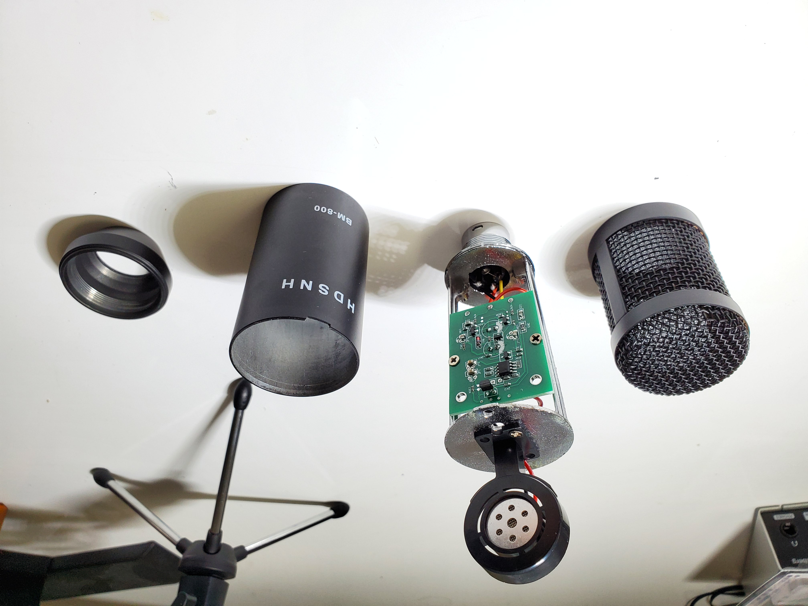
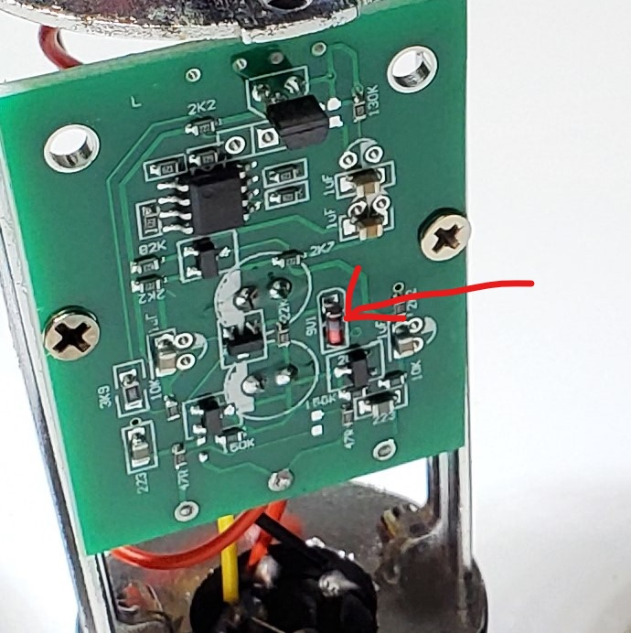
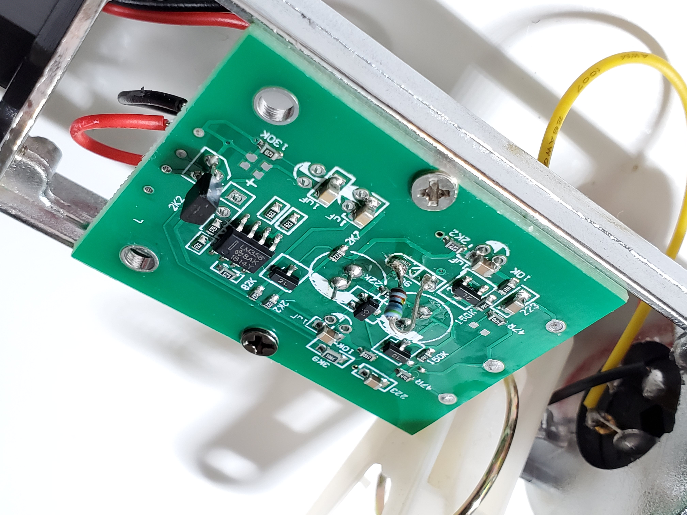
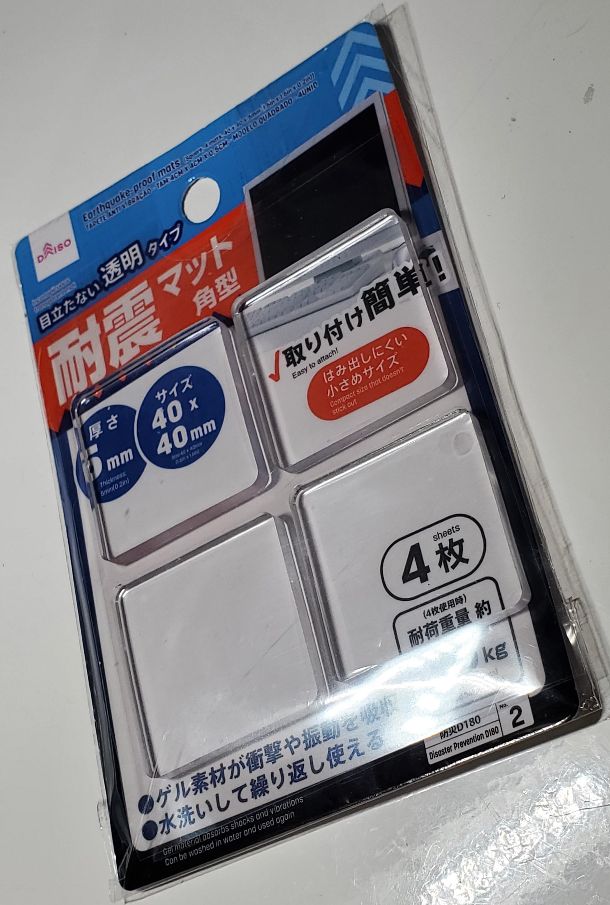
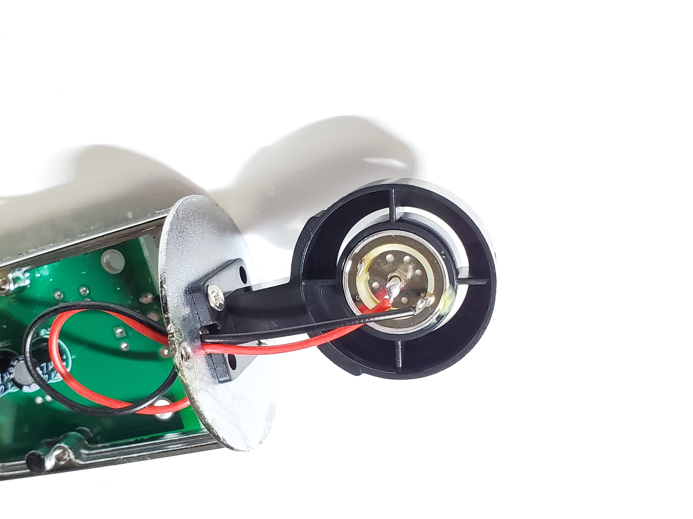
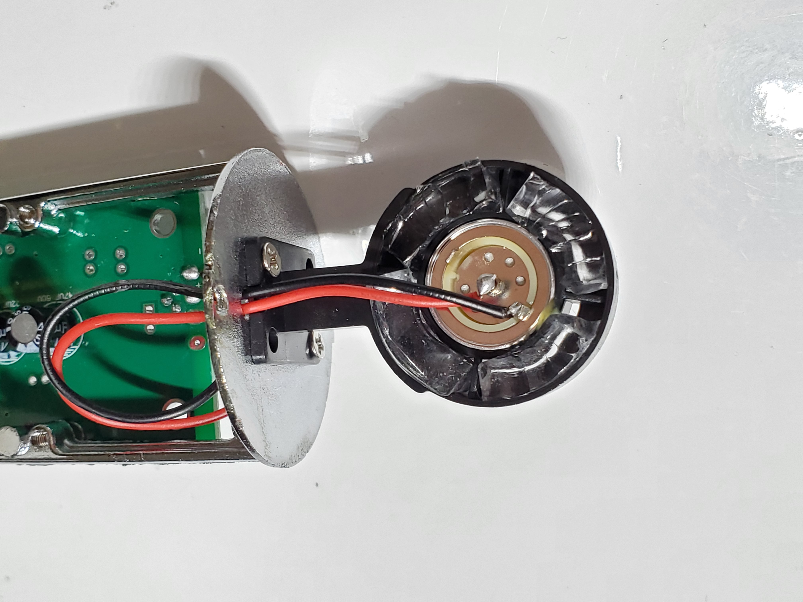

マイクの改造
Aliで1838円(2020/5/13)のコンデンサマイクを購入した。[リンクはこちら]
こちらのBM800というコンデンサマイクはAmazonで2000円～3000円で入手でき、簡単な改造で高級機レベルの品質に向上すると評判のマイクということで購入した。しかし、Amazonは品切れ…、Aliでは現在1600～1700円程度で購入できる模様。
開封
注文から17日で到着。いつも通り箱がぐちゃぐちゃに潰れながらも無事に届いてくれた。
 
 
分解
さっそく分解してみた。
 
このオレンジ色の小さい部品がノイズの原因といわれているダイオード [画像クリックで拡大]
交換
抵抗とりつけ

ダイオードを抵抗に交換した。
スキマ埋め
コンデンサを固定しているプラスチック部品のスキマを耐震マット(100円ショップ)で埋めてみた。

Before→After
 
結果
結果は…
…よくわからん！もとから音質良かった